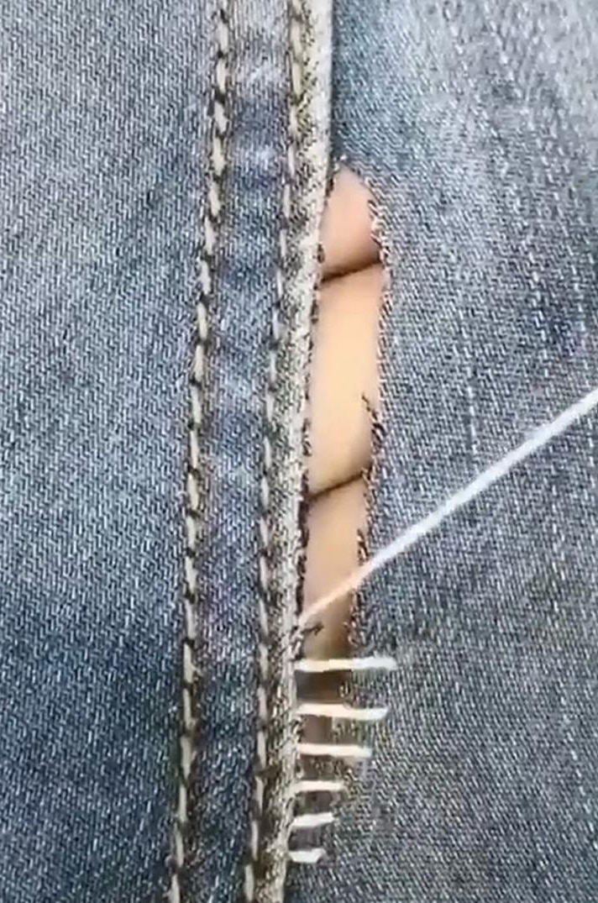
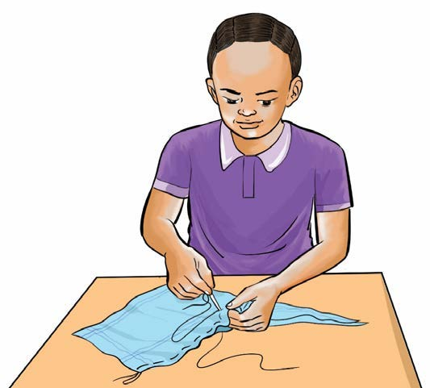

Kushona
Kushona ni kitendo cha kuunganisha vipande viwili vya kitambaa. Uzi hupitishwa kati yake kwa kutumia sindano.
Chunguza picha hizi, kisha jibu maswali yanayofuata:


Maswali
Shughuli ya pili
Tumia uzi na sindano kuunganisha vitambaa ili kupata mfuko wa kubebea daftari.